Locations Setup and Maintenance
Use Locations to maintain each store's information and settings. Each tab below covers one area of store setup.
To open this screen, go to Manage; Location Setup; Locations.
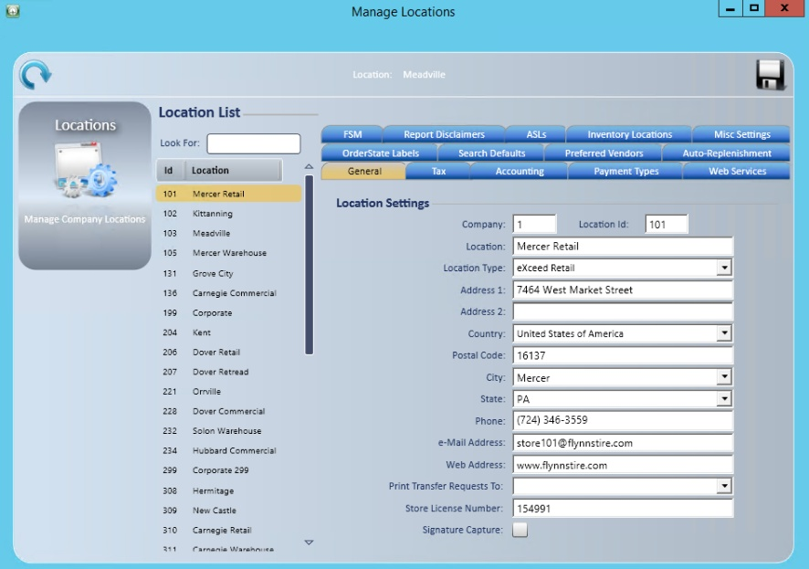
General tab
TCS sets up new stores during implementation. You can fill in additional information as needed.
- Highlight the store.
- Enter additional information as needed.
- Select Save .
Note: You can use the store license number field to hold any extra store information that has no field of its own, such as a NonSig number.
- Signature Capture: Check to have this store ask customers to approve orders. See Customer Approval.
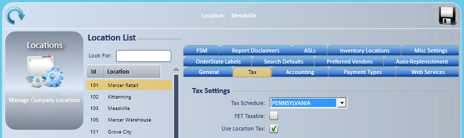
Tax tab
- Highlight the store.
- Select the tax schedule from the dropdown.
- Check Use Location Tax if tax is based on the store where the service work was performed.
- Select Save .
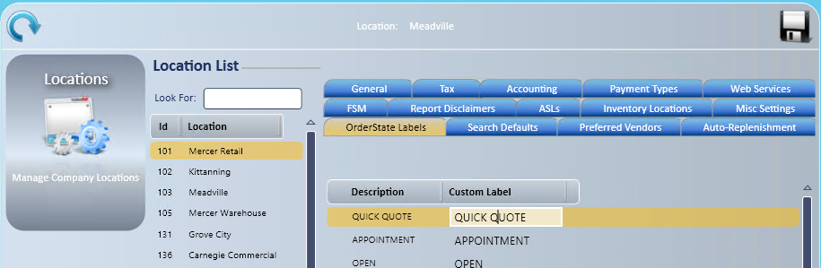
OrderState Labels tab
Give the default order statuses your own labels to match your company's practice.
- Highlight the store.
- Select and highlight the status to change.
- Click in the customer label column and enter the label.
- Select Save .
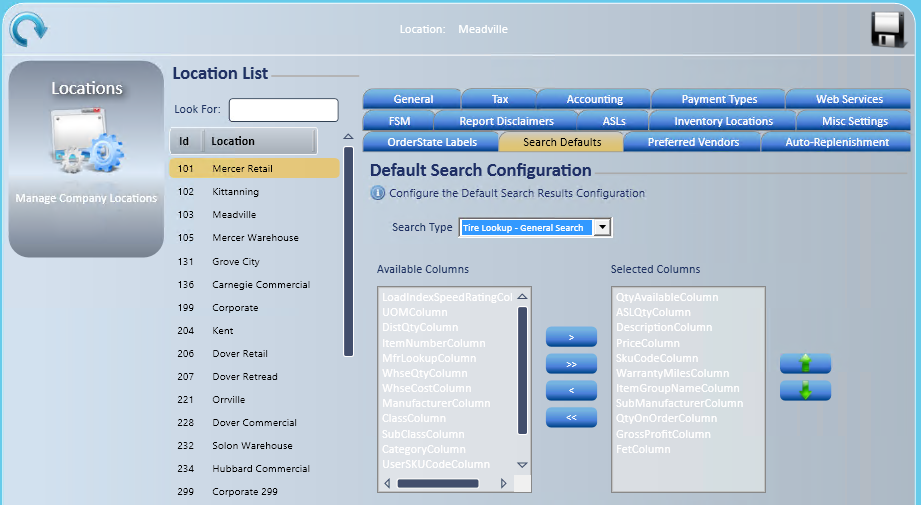
Search Defaults tab
Set search defaults by store and search type. You can also set search defaults for a single user.
- Highlight the store.
- Select the search type.
- Use the right arrow to move columns from Available Columns to Selected Columns.
- Hold CTRL to select several columns.
- Hold SHIFT to select a range of columns.
- To remove a column, use the left arrow to move it out of Selected Columns.
- Use the up and down arrows to set the order the columns display in.
- Select Save .
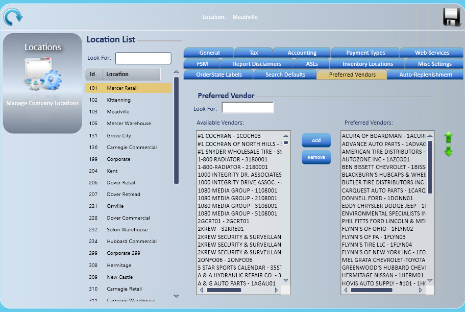
Preferred Vendors tab
Limit the vendor dropdown on purchase orders and outside purchases to the vendors for this store. A checkbox in the application lets you select all vendors if needed.
- Highlight the store.
- Select vendors in the Available Vendors list.
- Select Add to move them from Available Vendors to Preferred Vendors.
- Hold CTRL to select several vendors.
- Hold SHIFT to select a range of vendors.
- To remove a vendor from Preferred Vendors, select Remove.
- Use the up and down arrows to arrange the vendors.
- By default, vendors are in alphabetical order by vendor ID.
- Select Save .
Note: You don't need to log into each store to do this.
Remove preferred vendors
- Select the store.
- Select the Preferred Vendors tab.
- In the Preferred Vendors list, highlight the vendors to remove. The list displays alphabetically.
- To select a range, select the first vendor, hold SHIFT and select the second vendor. All vendors between them are highlighted.
- To select several specific vendors, select one vendor, then hold CTRL and select each additional vendor.
- Select Remove .
- Select Save when you're done.
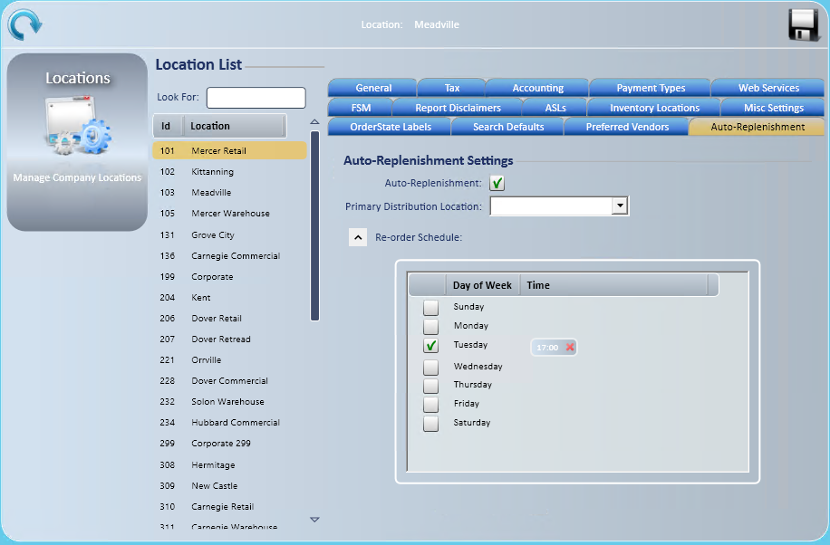
Auto-Replenishment tab
Auto-Replenishment automatically creates a transfer request from min/max data and submits it to the Primary Distribution Location.
- Highlight the store.
- Select the TireWorks® HD Wholesale tab and check Auto-Replenishment.
- Select the Primary Distribution Location from the dropdown.
- Select the days of the week to replenish.
- Consider the fulfillment location's hours of operation when you set the days and times.
- Select to the right of the time column.
- The time field displays only when the day of the week is checked.
- Enter the time in military time.
- Select Save .
Note: The transfer request is generated and submitted automatically. The transfer order is created in the sending location.
- Order Only What Can Be Fulfilled: Check to request only items the Primary Distribution Location has available.
- Sku Types: Check the SKU types to replenish. Only items of the checked SKU types are requested.
- Copy SkuTypes: Copies this store's SKU types to other stores.
- Vendors tab: Sets up scheduled replenishment purchase orders from vendors. See Vendor Replenishment.
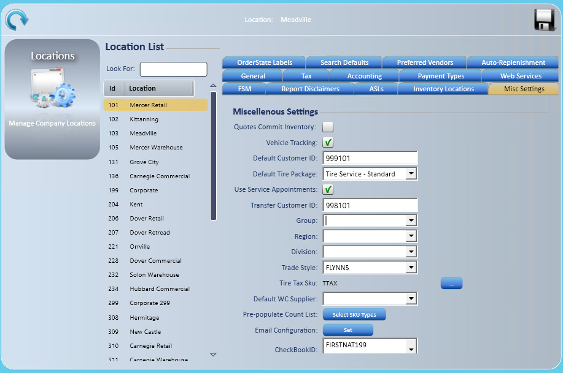
Other Locations tabs
These tabs are normally set up with TCS during implementation.
- Accounting: accounting settings for the store: Department Code, Default Location Segment, Location Deposit Account and Location Refund Account.
- If your company uses QuickBooks Online, only Location Refund Account shows, picked from a list of GL accounts (See QuickBooks Online and the Integration Manager).
- Payment Types: check the Company Payment Types this store can use when paying AP invoices.
- Web Services: service addresses for the store. These are set by TCS. Do not change them unless TCS Support asks you to.
- FSM: Factory Schedule Maintenance settings for the store: Add FSM as single Package, Include Inspections, Use Mapped Packages, and Print with Work Order and Print with Invoice (only prints with the initial print).
- Inventory Locations: enter an Inventory Location for each Sku Type. Available for Retail stores only.
- Store Hours: enter the store's Open Time, Close Time and Cutoff Time for each Day of Week.
Note: Some stores also see End of Day and Key Metrics tabs. These appear only when the feature is turned on for your company.
Misc Settings tab
Highlight the store, then set these fields.
- Quotes Commit Inventory: Unchecked by default.
- Vehicle Tracking: Checked by default.
- Default Customer ID: Select ... to search for the store's cash customer. TireWorks HD checks that the customer exists in your accounting system.
- Default Tire Package: Select from the dropdown. See Tire Package Fees.
- Use Service Appointments: Use if you use the appointment calendar.
- Transfer Customer ID: Select ... to search for the transfer customer (AR account).
- Trade Styles: Select from the dropdown if you use them.
- Tire Tax Sku: Select the ellipsis (...), enter the SKU in the SKU search, and double-click the SKU in the list.
- Email Configuration: Select SET to set up email for appointments and invoices. See Email Configuration.
- CheckBookID: Select the checkbook from the dropdown.
- Pre-populate Count List: Select SKU Types to choose which SKU types fill in counts on this store's inventory count lists. See Physical Inventory Count.
- Default Price Level: The price level this store uses when the customer has none.
Email Configuration
Use Email Configuration to let each store email service requests, invoices, quick quotes and appointments. You set up email separately for each store.
- Go to Manage; Location Setup; Locations.
- Highlight the store.
- Select the Misc Settings tab.
- Next to Email Configuration, select Set.
- In Email Id, enter the email address the store sends from. Each store can have only one email address.
- In Password, enter the password for that email account. The password is case sensitive.
- In SMTP Address, enter your email provider's outgoing mail server. Get this from your email provider.
- In Port, enter the port your email provider gives you.
- Check Use SSL if your email provider requires it.
- Under Email For, select each email type (for example Appointment, Invoice and Quick Quote) and edit the Subject, Body and Signature for each.
- Change the default Subject, Body and Signature text to your company name and information. Customers generally like the store phone number in the Body.
- Select Preview to see how an HTML email will look.
- Select Save.
- Repeat for each store. You don't need to log into each store; highlight each store in the same window.
- Test by emailing an appointment and an invoice from the store.
Microsoft 365 and Outlook accounts
TCS Support sets up Microsoft 365 and Outlook email accounts that require a Microsoft sign-in.
The first time a store sends an email, a Microsoft sign-in window opens. Sign in with the store's email account.
Note: Only users with the Outlook Authentication access right can complete the sign-in. Other users see "Manual Outlook Authentication is Required. Please contact your system administrator."
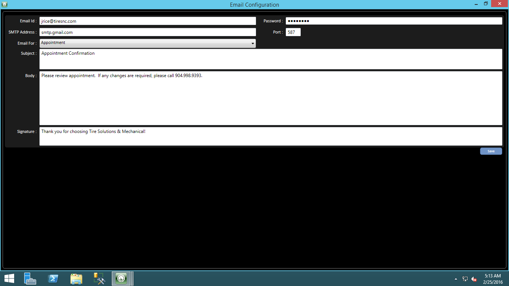
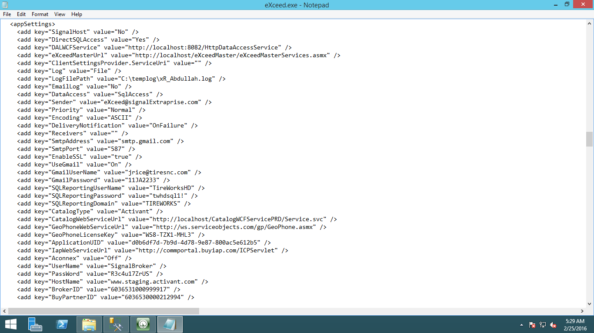
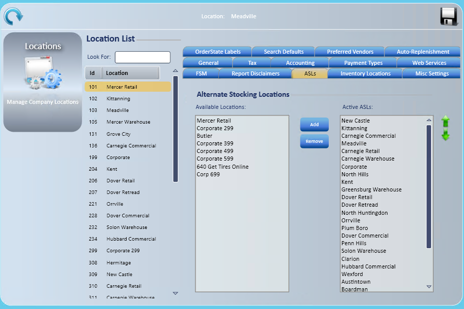
ASL tab
The ASL tab lets a store see other stores' inventory. The application shows inventory for the stores set up here by default, unless the user checks the checkbox to see all locations.
- Highlight the store.
- Select stores in the Available Locations list.
- Select Add to move them from Available Locations to Active ASLs.
- Hold CTRL to select several stores.
- Hold SHIFT to select a range of stores.
- To remove a store from Active ASLs, select Remove.
- Use the up and down arrows to arrange the stores.
- Select Save .
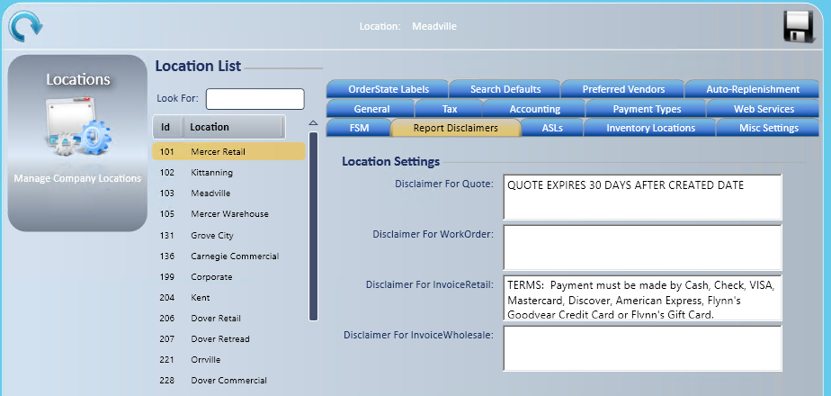
Report Disclaimers tab
Set reminders or notices by document type. They print at the bottom of every document.
- Highlight the store.
- Enter the disclaimer for each document type.
- The disclaimer prints exactly as typed, so check spelling and punctuation.
- Select Save .